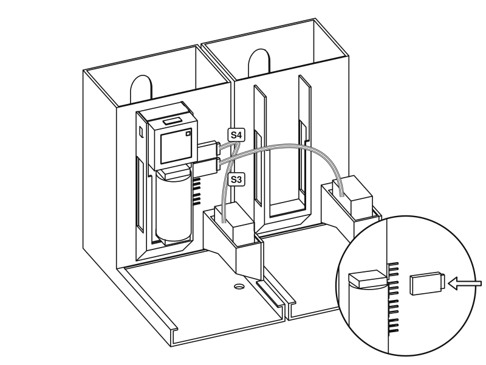
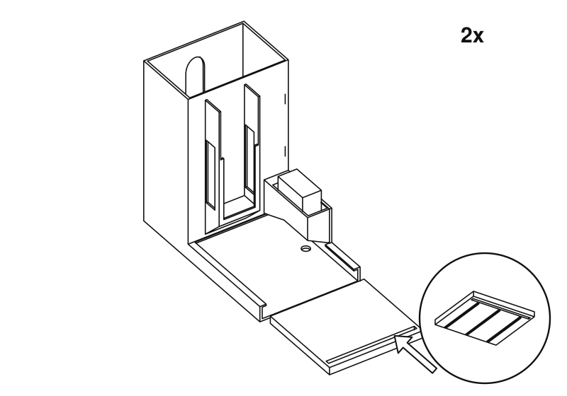

Spenser - a developer's companion, publicado por José Costa Teixeira. Este guia não é uma publicação autorizada; é a compilação contínua para a versão 1.0.0 construída pela FHIR (HL7® FHIR® Standard) CI Build. Esta versão é baseada no conteúdo atual de https://github.com/costateixeira/spenser/tree/master e muda regularmente. Veja o Diretório de versões publicadas Built from commit 32957deb.
Montagem
Esta página inclui traduções a partir da língua original em que o guia foi criado. Informações sobre estas traduções e instruções para fornecer feedback podem ser encontradas aqui.
Duas calhas, uma para chocolate negro e outra para chocolate de leite. Tudo o que
estiver marcado com 2x é feito uma vez para cada calha.
Estes desenhos foram feitos a partir dos modelos 3D das peças, não fotografados de
uma unidade acabada. Se algo aqui não corresponder ao que tem nas mãos,
diga-nos.
Verifique se tem tudo. As cruzetas e os parafusos vêm com os servos, e precisa também de um cabo USB-C. Uma peça de chocolate não pode ser maior do que 60 × 39 mm e deve ter entre 5,5 e 7,5 mm de espessura.1Desça o servo para dentro da caixa, com o veio para baixo, até as orelhas assentarem no rebordo. O veio aponta para o tabuleiro.2Fixe-o com dois parafusos através das orelhas. Justos, não apertados: estão a entrar em plástico.3Encaixe o Atom na extremidade da base Atomic Motion oposta à bateria.4Faça deslizar a base para baixo no compartimento da frente de uma das torres, com a extremidade da bateria primeiro, de modo que o Atom fique em cima. A bateria e o botão do Atom ficam virados para o tabuleiro, e os conectores dos servos do lado do servo. Só um dos corpos precisa dela.5

Coloque os corpos lado a lado. Encaixe a ficha do servo da calha do chocolate negro no conector marcado S4 e a da calha do chocolate de leite no S3, a que o firmware chama canais 3 e 2. O fio castanho é a terra: alinhe-o com a marca de terra junto ao conector. Pode escolher outros no painel.6Ligue a bateria externa à porta USB-C em cima do Atom e ligue o interruptor da base. Abra o painel e prima Move both to rest. A partir daqui, não rode os servos à mão. A bateria da própria base carrega pelo mesmo cabo.7

Deslize o empurrador para dentro do canal pela frente, com as nervuras para baixo e a ranhura comprida virada para si.8Encaixe uma cruzeta no sulco do braço, pressionando. Deslize o braço por baixo da caixa e para o veio, e depois fixe-o com o parafuso da cruzeta, através do orifício por baixo do corpo.8Em repouso, o braço aponta para a frente e o empurrador deixa livre o fundo da torre. Se não for assim, retire o braço e volte a colocá-lo no veio na posição correta.9Deixe cair o pino através do braço e para dentro da ranhura, com a cabeça para cima. Tem de deslizar livremente ao longo da ranhura. Se prender, lime a ranhura para a alargar um pouco.10Com a torre ainda vazia, prima Test dark cycle e Test milk cycle no painel. O empurrador deve passar pela ranhura na parte de trás e depois regressar. É aqui que sai o chocolate, por isso deixe espaço para um copo.11Empilhe o chocolate na horizontal pelo topo da torre. A janela na parte de trás mostra quanto resta. Indique à unidade quanto carregou, no painel.Pronto. Agora emita uma prescrição.
Estes desenhos são gerados a partir dos mesmos ficheiros STL que imprime. Para
alterar um deles, edite tools/assembly/build.py no repositório de código e volte
a executá-lo.